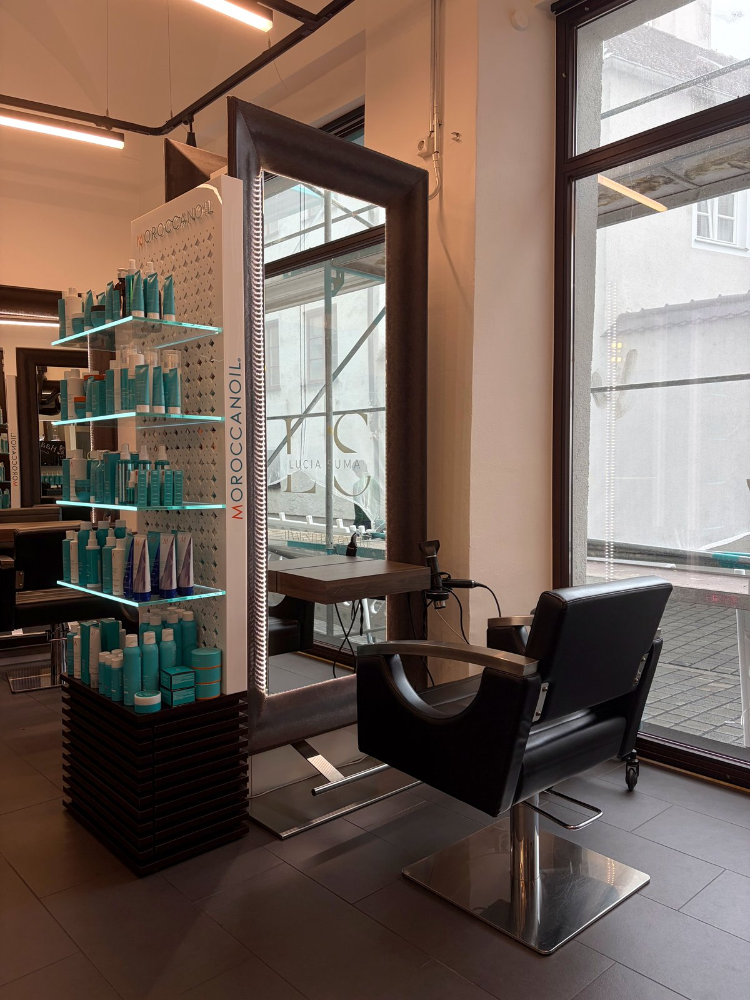
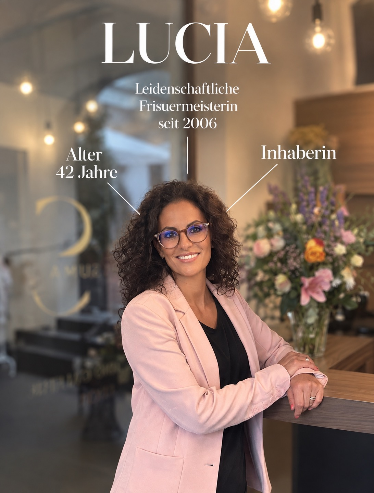
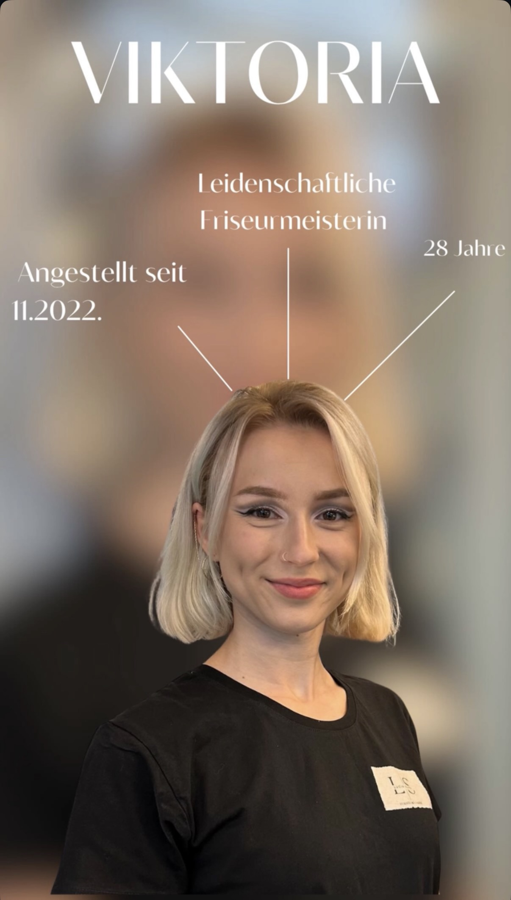
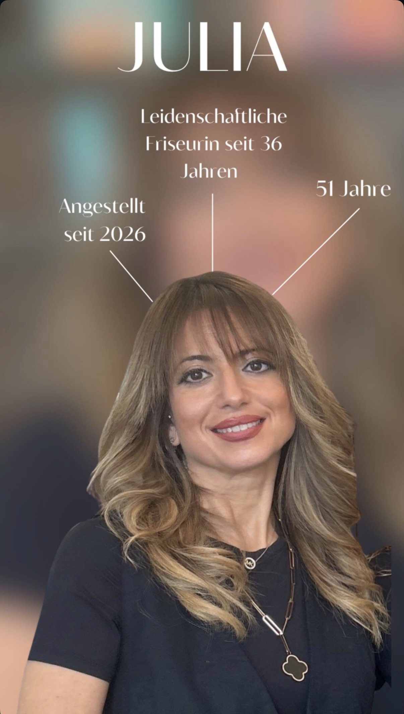

Typgerechte Beratung
Wir schauen zuerst hin: Haarstruktur, Gesichtsform, Alltag. Erst dann fällt die Entscheidung für Schnitt und Farbe.
Ein Damensalon in der Augsburger Innenstadt, in dem Beratung, Farbe und ein bisschen mehr Zeit zusammenkommen.

Inhaberin Lucia Suma führt das Haarstudio Galerie da Lucia mitten in Augsburg – im Antoniushof in der Dominikanergasse, nur wenige Schritte von der Maximilianstraße.
Ihr Weg zum eigenen Salon begann 1993 mit der Ausbildung zur Friseurin, die sie 1996 abschloss. 2006 legte sie ihre Meisterprüfung ab, 2020 wagte sie den Schritt in die Selbständigkeit – und seit 2024 ist sie mit ihrem Salon im Antoniushof zu Hause.
Bekannt geworden ist der Salon für ehrliche, typgerechte Beratung und für Farbe: natürliche Coloration, feine Foliensträhnen und handgemalte Balayage. Viele Gäste heben in ihren Bewertungen die fachliche Kompetenz und das gute Preis-Leistungs-Verhältnis hervor.
Was uns wichtig ist: Ein Termin bei uns ist kein Durchlauf, sondern ein Gespräch über das, was zu dir passt – und eine kleine Auszeit obendrauf.
Wir schauen zuerst hin: Haarstruktur, Gesichtsform, Alltag. Erst dann fällt die Entscheidung für Schnitt und Farbe.
Coloration, Strähnen und Balayage sind unser Schwerpunkt – natürlich abgestimmt und mit Blick auf die Haargesundheit.
Zu jeder Haarwäsche gehört bei uns eine Kopfmassage im Massagesessel. Der Termin soll sich gut anfühlen.
Unser Salon liegt im Antoniushof, nur wenige Schritte von der Maximilianstraße und wenige Minuten vom Moritzplatz entfernt – zentral und gut mit öffentlichen Verkehrsmitteln erreichbar.

Inhaberin & Stylistin
Typberatung, Schnitt und Farbe. Schwerpunkt Coloration und Balayage. Ausgezeichnet als Curl-Meisterin und Preisträgerin ihres Fachs.

Stylistin
Schnitt, Föhnen und Farbe. In Bewertungen oft namentlich gelobt. Sie ist Frisörmeisterin.

Stylistin
Schnitt, Styling und Farbe im Salon Galerie da Lucia. Leidenschaftliche Stylistin seit 36 Jahren.
Im Antoniushof in der Augsburger Altstadt. Für einen Termin ruf uns einfach kurz an – wir finden gemeinsam die passende Zeit.